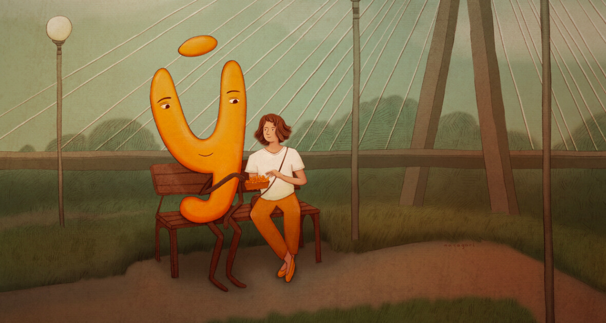
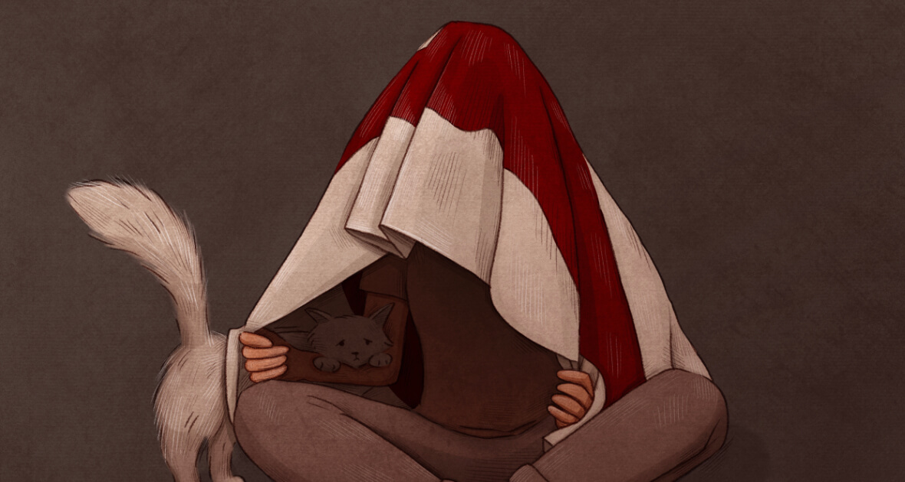
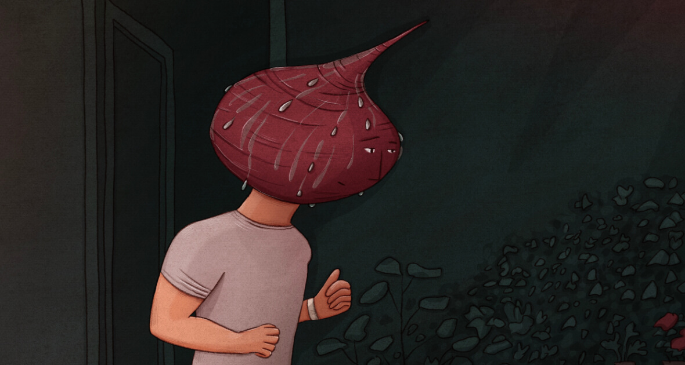
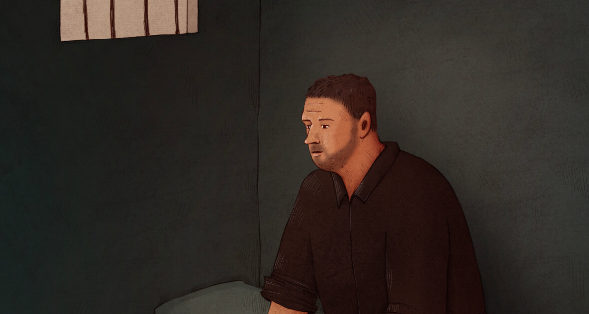

August and illustrations
1 of september, 2022
This August was very hot. But, although my tablet gets very hot while I draw, I still managed to create something during this time.
Belarusian language
I studied at school in Belarusian. But then I didn't particularly use the language. Only six months ago I started speaking Belarusian at home. Well, "Belarusian"... It's more like a mixture of Belarusian and Russian.
Of course, you can go to courses to study the language more specifically. But I just speak it in everyday life. And if I don't know a word and I'm in the mood to learn it, I look it up in the translator. So, little by little, I'm remembering and studying. Trying to make friends with the language by spending more time together. This is what I drew. And in the background - Warsaw, because it is.
Two sad years
This month marks the second anniversary of Belarusian protests. It is very joyful to remember the good things that happened, but there was also so much pain. And the pain continues.
This year I decided to draw this pain, sadness from this pain. I want to hide under the flag, to remember that inspiration, the common hope, but 2 years have already passed and the hope, unfortunately, has not yet come true.
Beetroot
It was such a hot month. But it coincided with my determination to introduce some sport into my daily life. I chose running. And since there is not much experience and the weather is so hot, there was a possibility to see at least one such beetroot on the streets of Warsaw. But with experience the face stops being so red. I even miss that beetroot.
Sitting but doing so much
While I live my rather ordinary life, there are more than 1,500 people in prison in Belarus for political reasons. This is a lot for a country of 9 million citizens. But even 1 person does not deserve it.
They are sitting but doing so much.
It is difficult to even write something further here. It just shouldn't be like that. To think otherwise, to act according to the law is not a crime. But in Belarus, laws are also changed because the current illegitimate government decided so. Fortunately many people continue to fight. And every day especially political prisoners motivate not to stop, even though everything seems to be against hope. Political prisoners do a lot.
